Styled Components
Com o Styled Components o Componente vai reconhecer somente seu próprio estilo, só esse estilo vai ser carregado na tela.
Isso evita carregar estilos obsoletos que foram criados para outros Componentes.
Evita, também, bugs em nomes de classes.
Fica mais fácil de excluir arquivos CSS porque cada CSS estará vinculado ao seu próprio Componente.
O CSS fica mais dinâmico porque vai poder adaptar o Código/Regra CSS à partir das Props do Componente ou de um Tema Global. Poderemos usar código JS dentro do CSS.
Manutenção ficou mais simples.
Styled Components cria prefixos automáticos - São códigos CSS específicos que escrevemos pra algumas propriedades pra que essas propriedades funcionem em todos os navegadores.
Tutorial Styled-Components
- Instalando a Biblioteca styled-components no projeto:
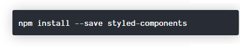
- Importando a Biblioteca styled-components no projeto:
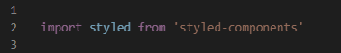
- Escolhendo a tag que será estilizada:
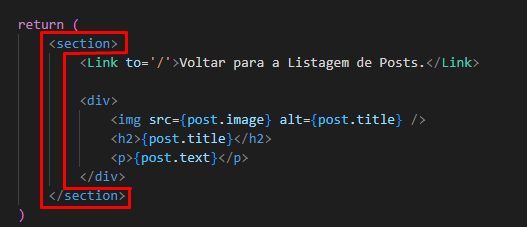
Vamos estilizar a tag Section que está sendo renderizada pelo componente PostDetails():
- Atenção ao lugar onde vai ser criado o Styled-Component. Deve ser criado logo após o fechamento das chaves do componente:
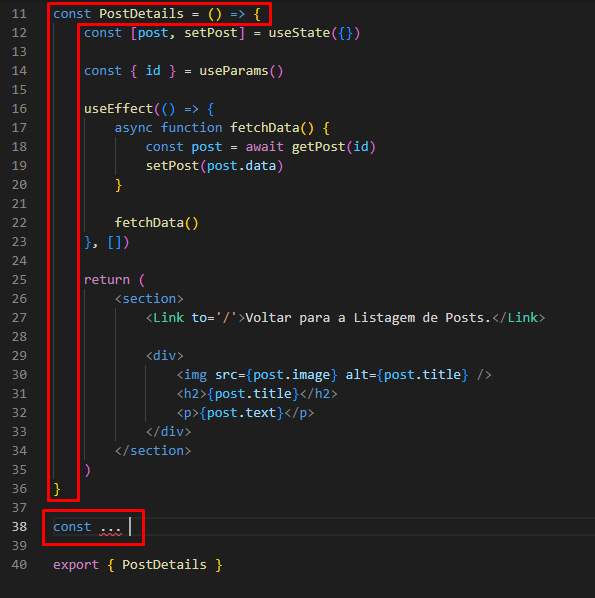
- O nome do Styled-Component deve ser o mesmo nome da Tag que deseja estilizar mas com letra maiúscola:
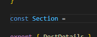
- Acessando a propriedade 'styled' + nome da tag, colocamos a Template-String e estamos prontos pra estilizar:
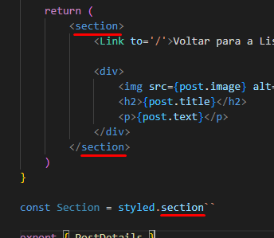
OBS: styled.nomeDaTagQueDesejaEstilizar.
OBS.02: O nome do componente estilizado é o próprio nome da tag mas com a inicial maiúscola.
- Dentro da Template-String escrevemos o nosso código CSS tranquilamente. Por fim, substituímos o antigo nome da Tag pelo novo e estilizdo nome (que é apenas o mesmo nome só que com letra inicial maiúscola):
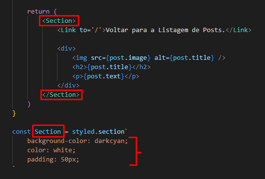
Estilos Globais:
- Deve ser criado APENAS no pai de todos os elementos (App.js), na página que vai renderizar todos o primeiro componente na tela.
Nesse arquivo, importe o createGlobalStyles from 'styled-components':
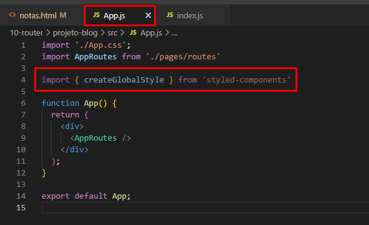
- Logo abaixo da função principal que renderiza a aplicação, crie um novo componente chamado GlobalStyle que acessa a propriedade 'createGlobalStyles':
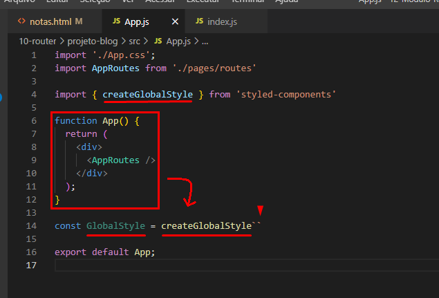
OBS: Muita Atenção com os nomes dos componentes (São Convenções).
- Os estilos vão dentro da Template-String e o Componente de Estilo Global deve ser chamado em cima das rotas do App.JS:
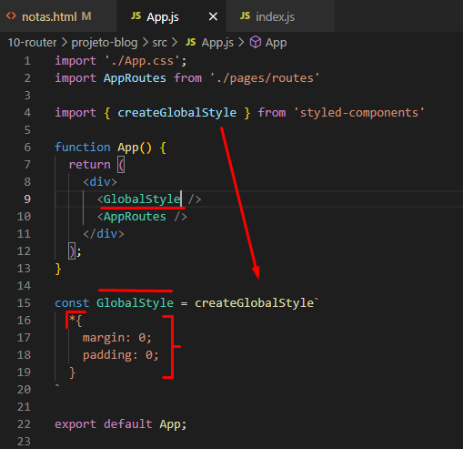
O Dinamismo do Styled-Components:
Podemos criar componentes com propriedades específicas e à partir disso criar validações com comportamentos diferentes pra cada opção. Ex: Caso o componente tenha uma propriedade chamada 'night', o componente terá um novo visual. Caso não, não terá.
Então vamos lá: Caso a Section tenha uma propriedade chamada 'night' o componente inteiro ficará com uma cor adaptada à noite. Caso não, ficará apenas com a cor branca padrão.
- Dentro dos estilos do componente Section, faça um Cifrão + Chaves pra poder escrever código JS:
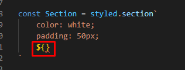
- Dentro das Chaves, crie uma Arrow Function que acessa as propriedades do componente:
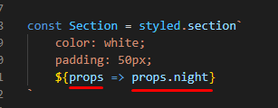
"Se o componente tem a propriedade chamada Night, continue lendo..."
- Depois dos 'E-Comerciais' (&&), deve existir a expressão 'css', mas para ela funcionar ela deve ser importada após a importação do styled-components:
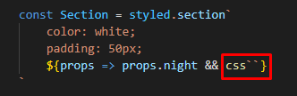
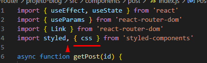
OBS: Dentro da Template-String da propriedade css (css``) é onde vai ficar o bloco de código que será executado caso a condição anterior aos && seja verdadeira.
- Isto é, Se a primeira parte da expressão for Verdadeira, execute a segunda parte da expressão:
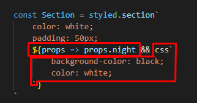
- Por fim, basta apenas inserir ou não a propriedade 'night' dentro do componente pra que o estilo condicional seja ativado:
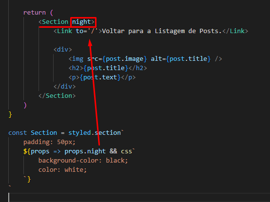
RESULTADO: